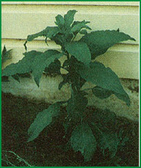
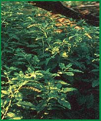
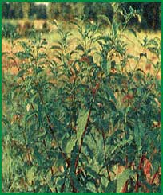

Now's the time to locate sources and markets so-come next spring-you can . . .
I'd been aware of the culinary possibilities of young pokeweed (Phytolacca americana) for years. It's one of the first wild greens I eat each spring . . . cooking the finger-sized shoots like asparagus and the tender leaves like spinach.
I also knew that some people here in eastern Oklahoma pick the plant to sell ... since the sign reading "We buy poke, 5 cents a pound" had gone up in front of the local gas station as it does every spring. It never occurred to me to harvest and market any "extra" greens myself, however, since I figured I'd need to collect an incredible number of the four-inch-tall spears (the size I usually gather for eating) to make such a venture worthwhile.
That's what I thought anyway . . . until one day last May, when a young woman in a pickup truck stopped and knocked on the door.
"Mind if I pick your poke?" she asked.
"Help yourself," I answered. (After all, we have several acres infested with the weed.) "But I'm afraid it's already too large to be really tender."
"Oh, I'm not going to cook the plants," she laughed. "I'm going to sell 'em, and I want the shoots to be as big as the canning companies will buy!"
I inquired it the pay would be worth all the bother.
"Oh, it's worth the trouble, all right," she told me, "if you can locate enough poke . . . the weight adds up pretty quickly when you pick stalks a foot or more in height. Of course, I won't get rich, but I can make a little spending money."
"Well" I thought, as the woman went off to make her pocket money picking my poke, "I'd better look into this!"
After asking around a bit . . . I discovered that poke-selling is big business in these parts. The "season" ordinarily begins during the second week in May and lasts until the end of the month. Pokeweed itself dictates a brief harvest time . . . because-while baby shoots are both delicious and healthful-the berries, seeds, and the handsome purple-colored bark of the mature plant-as well as the roots of any sized poke are poisonous.
I also discovered that our local buyers (Allen Canning Company of Siloam Springs, Arkansas . . . and Blytheville Canning Company of Muskogee, Oklahoma) actually prefer the weed when it's much larger than the tender little stems I find so perfect for home use. These firms want stalks about eight to ten inches high and will take them as long as 12 to 14 inches . . . because the leaves are what they "put up". (The stems-except for shoots the size of a little finger-are removed at the cannery.)
The most common way to gather the potherb in quantity is to drive a truck directly to the chosen site, usually along the edge of a "dozer-pile": those long, serpentine rows of logs left after someone clears a woodland area with a bulldozer. (Poke also grows beside fence rows, on roadsides, and in overgrown barn lots . . . but the plants are always most abundant along dozer-piles.)
The actual harvesting is simplicity itself . . . just give the stem a quick twist and it'll snap in two. Some people tote their gathered bounty in cardboard boxes or paper feed sacks, but the most efficient method is to spread an old sheet or blanket on the ground and carry armloads of poke to it . The pile, when it's sufficiently large, is transferred to the bed of the truck. (The pickup should be parked in the shade, if possible, to prevent the succulent greens from wilting . . . or a tarp can be rigged over the back of the vehicle as a canopy against the sun's rays.)
You can make more money on the plant than I expected . . . even at the current rate of about 5 cents a pound. It's possible for two people to pick more than a thousand pounds of poke stalks (from three or four prime growing areas) in one morning's time. And morning is the best time to harvest this plant, because it weighs more before the hot afternoon sun gets to it.
I know a family of four who who take a week's vacation in this area every year to cash in on pokeweed. They have standing picking rights with several landowners, and reap the same fields every year. A good day brings them between $100 and $125 . . . and the pickers still have time to visit the "ol' swimmin' hole"-or enjoy a canoe trip down the river-during the afternoon!
Some people fear (and many farmers hope) that the heavy annual harvest will lead to the extinction of the potherb, but there seems to be no danger of that. A plant that's cut to the ground in June will send up new shoots (from the many eyed perennial root) and produce viable seed by fall. And, contrary to popular belief, poke comes up readily from seed. (I've seen tiny seedlings in a mat "thick as hair on a dog" alongside our dozer-piles.)
If you live in a poke-growing area (you can find the prevalent plant in eastern North America from Mexico to Maine, and on north into Quebec and Ontario) but are not familiar with the weed . . . you should plan to learn to recognize it between midsummer and the first frost. Because-although the newly emerging spears might be confused with other plants by the untrained eye-mature poke is hard to mistake for anything else. Fully grown specimens are bushy and tall (up to nine feet or more) . . . and they have large, alternate, elliptical, pointed, dark green leaves. Their stout stems are smooth, hairless, and purple ... and the small, white to greenish-white to pinkish flowers turn to long-stalked, slender clusters of blackish-purple berries (which have crimson-colored juice and tight-packed seeds).
It's even possible to locate stands of the perennial after frost, when the tough woody stalks bleach out and stand stark and white against the brown and barren landscape.
Winter is a good time to line up your picking territory, too . . . by getting advance permission from landowners to harvest on their property. (Need it be said that you must always ask leave before setting foot on someone else's land? There are people who'll run you off with a shotgun if you don't request permission, but be sweet as sorghum molasses if you do!)
I learned of the profit potential of this common plant too late to take advantage of it this year, but any would-be poke-pickers who knock at my door next spring are bound to be disappointed . . . 'cause I'm going to harvest-and sell-the tasty weed myself!
EDITOR'S NOTE: If you don't happen to live in the Arkansas/Oklahoma area . . . a few calls to local canneries now might well turn up a market for next spring's poke crop. And-even if you can't locate a buyer-you'll still have the delicious shoots and leaves to eat and enjoy (many foragers recommend changing the cooking water two to four times when preparing this vegetable . . . to get rid of any bitterness).
|
 A shoot of ""canning size"". |
 Poke is fond of fence rows. |
 Mature poke is poisonous. |